Instructions for the Intel® Galileo or Intel® Edison using Windows.
Establish a serial connection to your IoT board using PuTTY installed on your development computer. Use Windows Device Manager to find the COM port number for the "USB Serial Port" connection.
If you need to configure your IoT board, you will need to remotely connect to the Intel® Edison or Intel® Galileo. Once connected to your Intel® IoT board, you have access to the Linux-based Yocto operating system running on the board.
Open Device Manager and scroll down to the "Ports (COM & LPT)" section.
Windows 7 and below:
Open Start menu.
Start typing "device manager" in the search field.
Select "Device Manager" under "Control Panel"
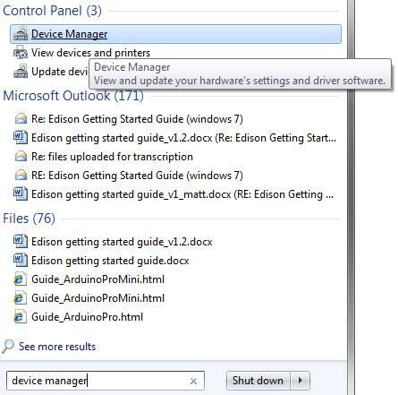
Windows 8:
Go into Windows Desktop mode.
Right-click on the Start menu button.
Select "Device Manager".
Make a note of your COM # for the "USB Serial Port" device.
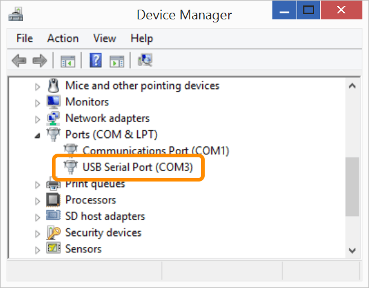
Do you have the right COM number?
Use the COM # shown on your computer's Device Manager. In the screenshot, it is "COM3" but your computer will have unique COM port number assignments and may be different from the screenshot.
Do not use the COM number for "Intel Edison USB Composite Device" or "Intel Edison Virtual Com Port".
Double-click putty.exe on your computer to launch PuTTY.
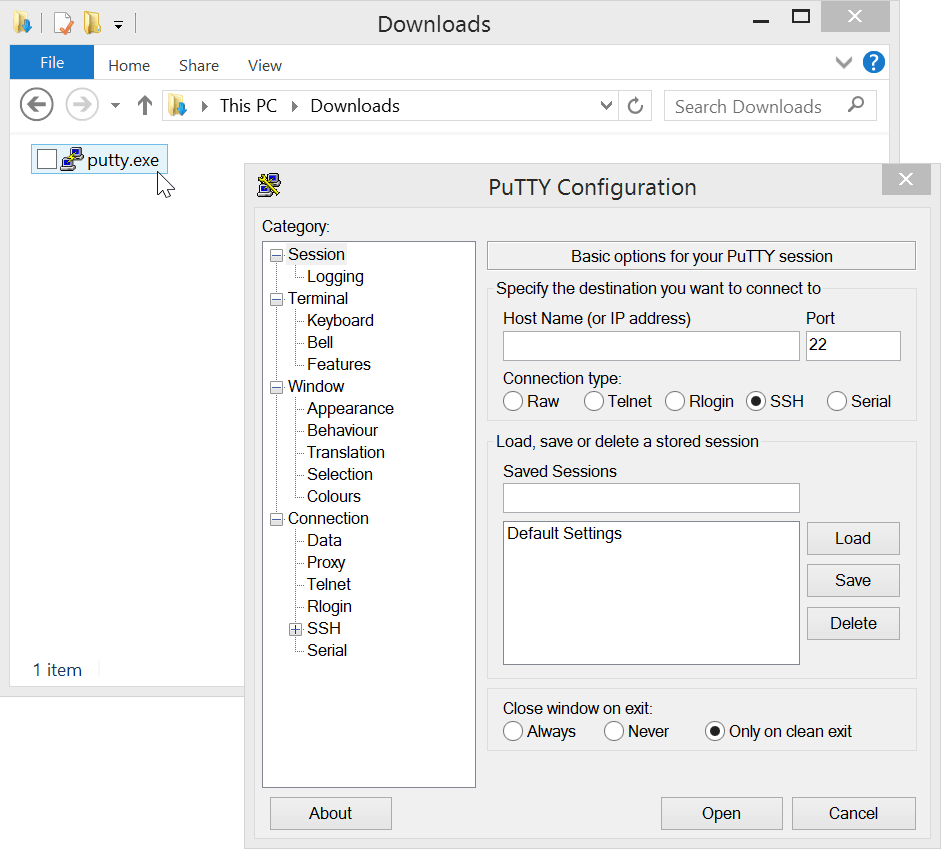
In PuTTY, double-check that you are in the "Session" screen.
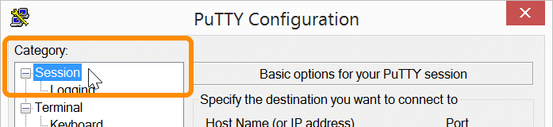
Select the "Serial" radio button under "Connection type".
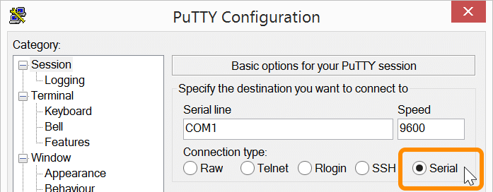
Specify the destination you want to connect to:
Serial Line: use the COM # noted previously in step #2 by using Device Manager
Speed: use "115200" for the baud rate
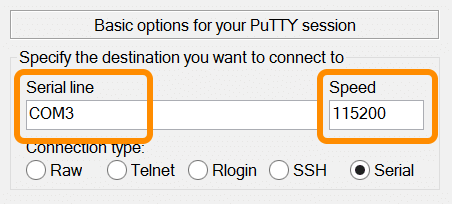
Click "Open" to connect to the board.
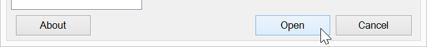
When you see a blank screen, press the Enter key.
Once connected you will see a login prompt.
Type in "root" for the username and press Enter.
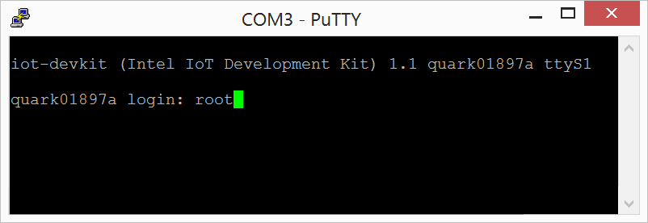
You are now logged into your IoT board and can run shell commands!
Set up your board using the configure_edison command with the --setup flag.
You will use these credentials to connect to the board if you need to re-connect the serial connection, or program the board using the Intel XDK in the next section of this workshop module.
configure_edison --setup
Follow the prompts to set the device password to be "intel123".
Then follow the prompts to give your Intel Edison device an easy to recognize name.
When asked if you want to set up wifi, type "Y" and press Enter.
The Intel® Edison will scan for Wi-Fi networks and display a list of available networks when finished.
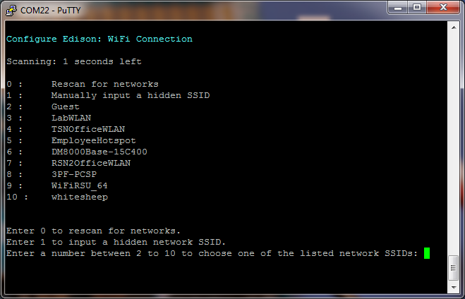
If you do not see any networks, try re-scanning by entering "0", or run configure_edison --wifi.
Locate your Intel IoT Gateway SSIDthe network you would like to connect to in the list and enter the corresponding number in the prompt. Press Enter.
To confirm your entry, type "Y" and press Enter.
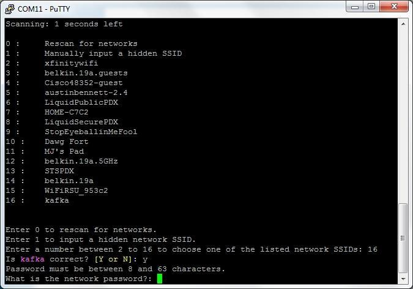
In this example, to connect to "kafka" use the number “16”.
The network in this example requires a password. Your network might require other information. Enter the appropriate network credentials. Press Enter when finished.
The Intel® Edison will attempt to make a connection to the Intel IoT Gatewaynetwork.
When you see a "Done" message, you are now connected to the Gatewaya Wi-Fi network.
Note the IP address. You will need it in Step 4: Deploy a sample application with the Intel® XDK IoT Edition.
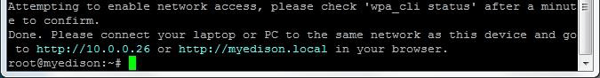
You should now understand how to gain shell access to your Intel Edison. And your Intel Edison should now be connected to the Intel IoT Gateway.